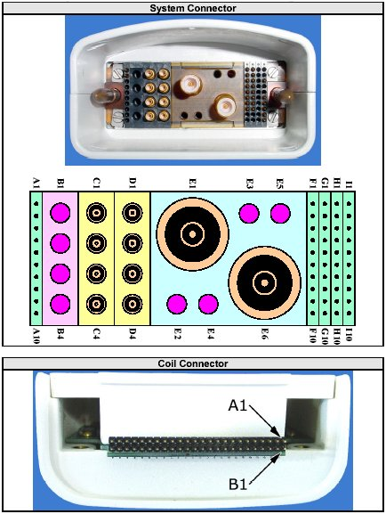
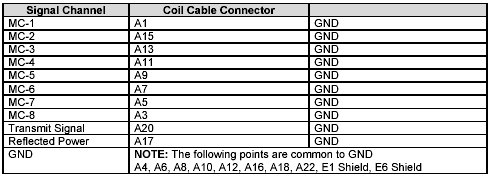
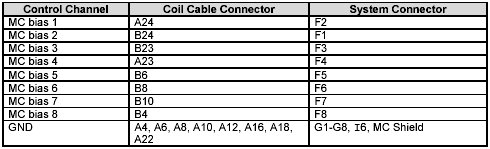

- 00000018WIA309A1F20GYZ
- id_131061093.0
- Aug 29, 2019 1:54:15 AM
1.5T HD Knee Array Coil Installation / Troubleshooting
Coil Installation
Reverse Polarity Configuration
| CAUTION | |
|---|---|
Tools Required
1ea Philips Screwdriver
Configuration Time
15 to 20 minutes
Configuration Procedure
If required, follow these steps to configure the 1.5T HD Knee Array for reverse polarity.
-
Remove the 1.5T HD Knee Array coil cable as detailed in 1.5T HD Knee Array Coil Maintenance/Replacement.
-
Separate the anterior and posterior coil sections.
-
Using the phillips screw driver, remove 4 screws from the anterior coil section
-
Remove the anterior coil section cover as illustrated in
-
Locate the two Trap/Combiner Coaxial Cables; they are marked 1 an 2, and are connected to the Combiner Printed Circuit Board at locations Port 1 and Port 2 respectively.
-
Disconnect both Trap/Combiner Coaxial Cables. Connect cable 1 to Port 2 and connect cable 2 to Port 1.
-
Reinstall the anterior coil section cover using the 4 associated phillips head screws.
-
Reinstall the 1.5T HD Knee Array coil cable.
-
Perform the Coil Imaging Performance Verification. Refer to 1.5T HD Knee Array Coil Setup and SNR Test.
Installing the Coil
There are 3 configurations available:
-
HD TRKnee PA
-
HDTRKneeService
-
HDTRK1chService
HD TRKnee PA is the only configuration visible in clinical mode. HDTRKneeService and HDTRK1chService are visible in service mode (geservice). HDTRKneeService and HDTRK1chService must be installed for the SNR tool to run.
Add the coil to the site coil list using the Configuration File Manager. Refer to: Service Methods CD; Software; System Level Software Procedures; Configuration File Manager.
Functional Checks
Periodic Quality Assurance Check
QA checks should be performed during installation and during planned maintenance. Perform the quality assurance checks as outlined below to ensure the coil is operating properly.
-
Check external cable for cracks or cuts.
Troubleshooting
External Cable Check
Use Figure 1 for pin identification while performing the procedures in External Cable Check and PIN Diodes Check. Referring to 1.5T HD Knee Array Coil Maintenance/Replacement, disconnect the coil cable from the coil.

RF Signal Channels Check
The center pins of the System Connector receive coaxial connectors are extremely fragile [Figure 1]. Do not attempt to make any measurements at these center pins.
With the coil cable disconnected, use a multimeter to assure an open circuit condition exists between the designated pin and GND, for each signal channel in Figure 2.

If one or more of the readings indicate a short, replace the cable. If all of the above readings indicate an open circuit condition, proceed to the PIN Diode Control Channels Check.
PIN Diode Control Channels Check
With the coil cable disconnected, use a multimeter to determine continuity between the designated pins for each control channel in Figure 3. Also verify that the control pins are not shorted to GND.

If one or more of the readings are > 3 ohms, replace the coil cable. If all readings are < 3 ohms, proceed to the PIN Diodes Check .
PIN Diodes Check
Troubleshooting Tips
If the following error is displayed, there may be a problem with the Coil ID coil or system hardware: The prescribed RF coil and detected RF coil do not match.
Trouble-shooting instructions are available online by accessing the service browser:Diagnostics -> Peripherals -> SRI Functional Tests -> Coil ID .
Start the diagnostic by selecting SRI Coil ID and Run. The diagnostic will display the contents of the coil ID chip whenever the connector is inserted. Follow the trouble-shooting instructions if the correct ID is not displayed. When the trouble-shooting is complete, and if the correct ID is still not displayed, replace the cable.